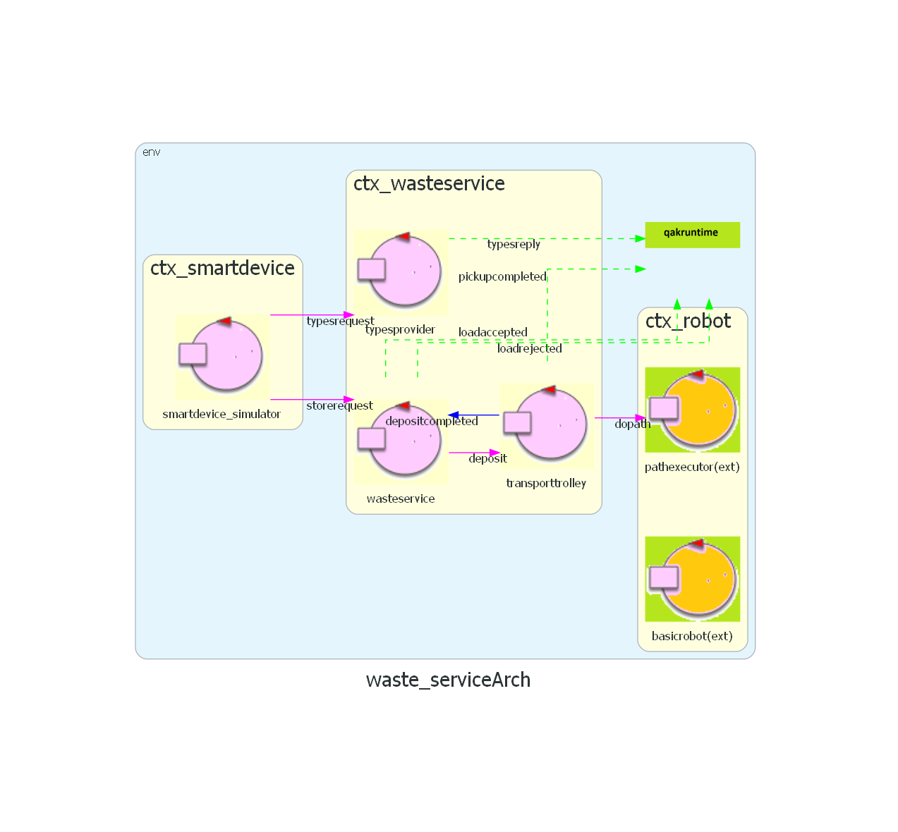

Problem Analysis
- definire meglio "location" (posizione, come casella - coordinate) e spiegare perché questa scelta.
Utile(?): glassbox [1,2,3,4] per indicare quale casella del glassbox (dare spiegazione smanettona sul perché si accumula la spazzatura in un punto ehehe) Spiegare perché origine del piano cartesiano sta in alto a sinistra
Core-Business Software
Spiegare le funzioni dei vari attori (magari inserire una tabella)
- Il waste service gestisce le richieste. Gestisce le operazioni che il transport trolley deve eseguire: - pickup - deposit(smth) -
- The transport trolley doesn't know what's a container or how much waste he's moving, he just executes commands (it's an actuator), with a predefined behaviour: - deposit(smth) -> go to indoor, pickup, move to deposit the material, dump, go home sync or async, blocking or not blocking? Could be sync, but there are 2 problems: 1) could arrive a new request while it's going home; 2) could be stopped (requirement not yet to be analyzed -> sprint2)
Smart Device
Waste Service
The customer requirements don't specify priority rules regarding the truck requrests, therefore, they'll be served in order of arrival. We decide to send aload_rejected even if the store_request
contains a invalid data:
- Not properly formatted according to the JSON object.
- Negative or too big WasteLoad.
- WasteType not present in the Service Area.
-
Waste Service side: use a descriptive model to indicate the main relevant position (
HOME ,INDOOR ,GLASSBOX ,PLASTICBOX ). -
Transport Trolley side: Use a
2x2 matrix , where each element represents a different position, starting from the top-left corner.
- Since the HOME is the top-left corner, it's more intuitive to represent it as the first element of the matrix, which is the [0,0] element.
- We can associate a cartesian coordinate system to the matrix with the origin in the top-left corner and RD as unit. That might make things easier later on, if we will need to implement a graphical representation of the transport trolley state (for example in WasteServiceStatusGUI). This because almost every software, library, framework or API, start drawing from the top-left corner to the bottom-right one.
-
We could use the software provided by the customer, such as the mapper to obtain a representation of the room, and the path executor to make the robot move along a path.


Show the coordinate system
Relevant Positions
The matrix number of rows and columns depend on RD (which is the size of the DDR robot), therefore for the moment we assume to have an M x N matrix, i.e. with respectively M rows (x axis) and N columns (y axis).
The relevant positions are:
Come otteniamo la rappresentazione della mappa? Possiamo utilizzare unibo.mapper (link al progetto),
che fornisce un modello QAK eseguibile, in particolare:
- [0,0] =
HOME - from [0,M] to [4,M] =
INDOOR - from [N,0] to [N,4] =
GLASSBOX - from [N,M-4] to [N,M] =
PLASTICBOX
mapperqak22.qak
Eseguire unibo.mapperQak22\src\it\unibo\ctxmapemptyroom22\MainCtxmapperqak22.kt
Che salva la mappa in mapRoomEmpty.txt
Transport Trolley and DDR Robot
On the other hand, the Transport Trolley is a more abstract concept, which encloses the logic and controls the DDR Robot.
| Transport Trolley | high-level control unit. |
| DDR Robot | low-level technology agent. |
Solution: we can use the BasicRobot QAK actor, provided by the customer together with unibo.basicRobot22 project, to have both a
WEnv (Scene)
Reasons:
- we reuse code that's already implemented
- basicRobot is built following the actors paradigm (and QAK meta-modeling lang), so it's easy to integrate it with the rest of the project
We assume that the deposit action cannot fail and the trolley cannot be stopped, for the moment. However, since we know in the next sprint we'll implement the stop/resume mechanics, we decide to model the interaction in an asynchronous way. WEnv -> Virtual Enviromnent fornito dal committente, spieghiamo perché usiamo questo
Interactions
Reasons: it's the message format of the QAK (meta-)modeleing language
Core-Business Messages List
| Message | Type | Sender | Receiver | Description |
|---|---|---|---|---|
| storeRequest | Request | SmartDevice | WasteService |
Ask if truckLoadwasteType |
Smart Device ↔ Waste Service
Possible solution: hard-code the types into the Smart Device.
Considerations:
- Pros: this is the easiest solution to implement, since they can be just implemented as a list or an enumerative.
- Cons: not scalable, since it doesn't allow the Waste Service to have different waste containers but the ones initially specified by the customer in the requirements.
Reasons:
- Much more scalable, since the list can eventually be extended in the future, all from the Waste Service side, without having to distribute or push updates to the Smart Device.
- It introduces a layer of complexity, since the communication between the Smart Device and the Waste Service requires at least one more message, but the tradeoff gives more advantages than the disadvantages, and the result can be achieved by introducing a specific Actor that deals with the types providing.
-
client-side validation : if the user enters invalid parameters for the store request, the Smart Device displays an error and the request cannot be sent. -
server-side validation : if an invalid store request is received, the Waste Service replies with a loadrejected.
Reasons:
- That solution is the simplest to implement and the most efficient, since we invalid store requests are just ignored, and the Waste Service doesn't spend computational time and resources trying to understand the reason.
- Since nothing (at the current state of the project) prevents a malicious user to create and utilize a fake application which allows him to send invalid store requests, a server-side validation, would make it impossible to break the system or have unexpected behaviour.
Considerations:
- The Waste Service might receive a new request while it is handling another one.
- The pickup action takes some time (a defined and known amount).
- If the Smart Device sends a request while there is another deposit action in progress, it must wait it to be completed.
- If we're able to know if the load can be deposited as soon as we receive the request, we could reply instantly, and therefore meet the requirement that the truck driver must be sent away as soon as possible.
-
Send the
loadaccepted replywhen the Waste Service completes the pickup action . -
Use
2 separate storage counters : one that is updated as soon as the store request is managed (incremented in the case of the loadaccepted), and a second one, which is the actual current state of the storage, that is updated only when the transport trolley completes a deposit action. -
Use
2 separate actors : the Waste Service that handles the requests, and the Transport Trolley that performs the deposit actions.
Reasons:
- Send a reply only when the truck driver can be sent away.
- It's simple to implement, since there are less messages to deal with, therefore less overhead.
- Using 2 separate storage counters allows us to send a reply to the Smart Device as soon as possible, since we know if the waste can be stored at any time.
- (Related to Sprint3 - Monitoring) we can update the GUI with a more time-accurated value of how much space is left in each container.
pickup_completed', that is sent by the Waste Service to
the Smart Device and indicates that the pickup of the waste has been completed and the waste truck can leave the indoor.
Difficulties: the QAK currently doesn't provide a way to send dispatches to aliens (i.e. the Smart Device), therefore we are not able to notify the Smart Device when the corresponding pickup action has been completed.
- Send notification messages about the state (for example, 'there is another deposit action in progress', or 'pickup action in progress')
- Send an estimate of the time to wait before the pickup (we might calculate the time of the previous requests)
- Allow the Smart Device to cancel a queued request.
Reasons:
Waste Service ↔ Transport Trolley
Transport Trolley ↔ DDR Robot
Logical Architecture
 QAK model: waste_service.qakTest Plans
| Test | Involved Actors | Description | Files |
|---|---|---|---|
| Receive the correct WasteTypes List |
|
We check if the TypesProvider actor replies correctly to the SmartDevice, with the list of WasteTypes available. | QAK: test_types_provider.qak Test: TestTypesProvider.kt |
| StoreRequest Handling: loadaccepted |
|
We send a StoreRequest for a load that can be stored for sure, and we check if the SmartDevice receives a loadaccepted message from the WasteService, after the pickup action is completed. |
QAK: test_waste_service.qak
Test: TestWasteService.kt
|
| StoreRequest Handling: storage update |
|
We check if the WasteService correctly updates the storage counter by sending 2 StoreRequest sequentially:
|
|
| StoreRequest Handling: loadrejected (invalid WasteType) |
|
We check if the StoreRequest gets rejected when the WasteType is invalid (e.g. "ORGANIC"). | |
| StoreRequest Handling: loadrejected (invalid WasteWeight) |
|
We check if the StoreRequest gets rejected when the WasteWeight is invalid (e.g. negative value). | |
| StoreRequest Handling: loadrejected (not enough space) |
|
We check if the StoreRequest gets rejected when the container of the given WasteType is full. | |
| Deposit Handling: GLASS |
|
We check if the TransportTrolley transits through all the states necessary for the execution of the GLASS deposit action.. | QAK: test_transport_trolley.qak Test: TestTransportTrolley.kt |
| Deposit Handling: PLASTIC |
|
We check if the TransportTrolley transits through all the states necessary for the execution of the PLASTIC deposit action. |